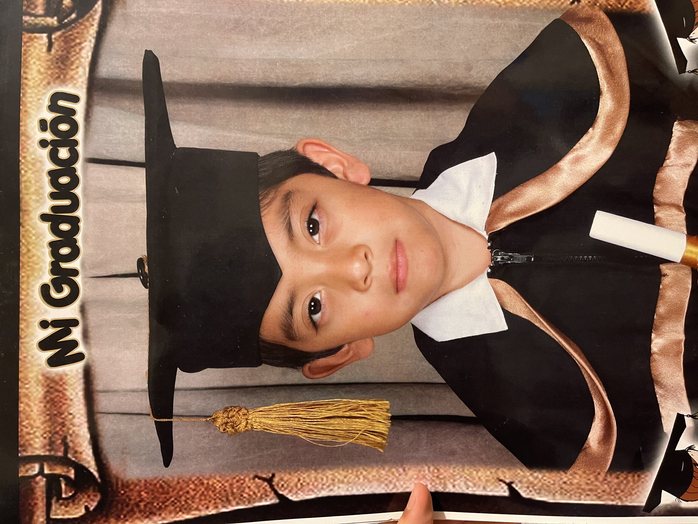

Jose Rios
Mi nombre es Jose Sakvador, naci en el 2006,tengo 18 años, me gusta mucho comer y escuchar musica, tambien me gusta dormir y comer, mi color favorito es el azul. Este trabajo es para la clase de diseño web y la pondre en una biografia de mi pagina web.